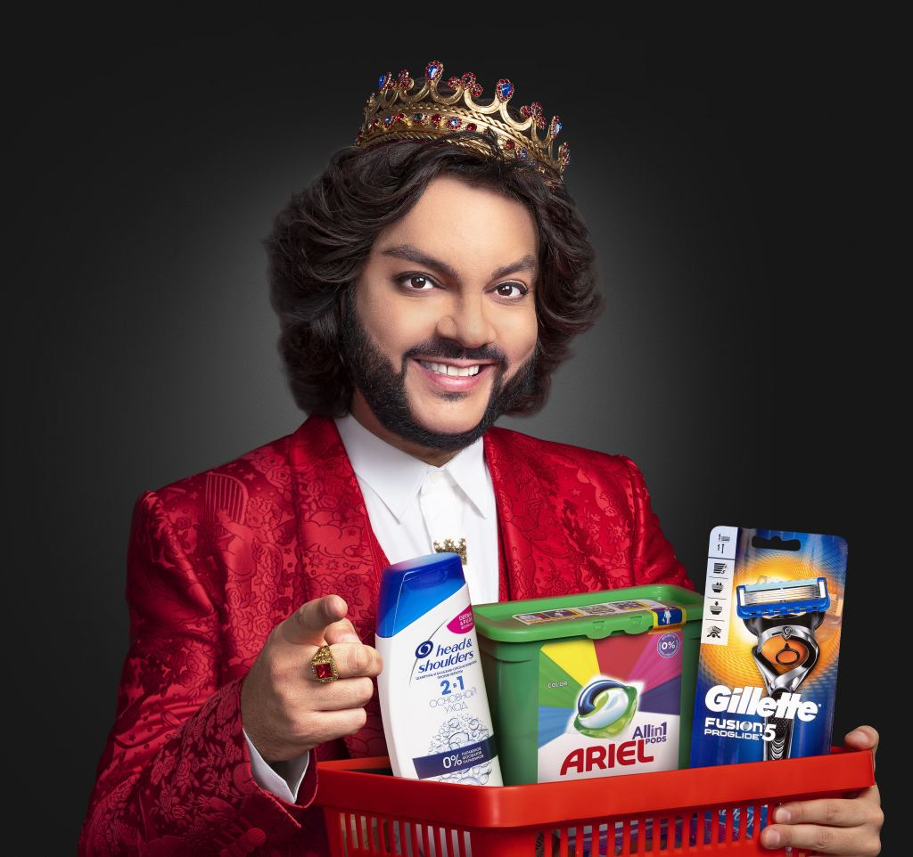
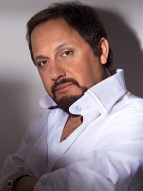

Майонез представляет собой холодный соус французского происхождения, состоящий из растительного масла, яичного желтка, уксуса, лимонного сока, соли, сахара и прочих приправ, от которых зависит цвет и вкус соуса.
Мнения Экспертов
Кирилл Овчинников
Майонезный эксперт Шон де фон Жебю
Дмитрий Генглик
Ест майонез на протяжении 21 года
Иван Марков
Майонез мой наркотик, мой никотин
Отзывы
Галина Николаевна, 65 лет
Когда я попробовала этот майонез у меня сразу восстановилось давление, пропали все болезни. Купила всем своим родственникам, рекомендую!
Борис Петров, 35 лет
Я заправляю майонезом всё, что я только ем. В том числе, гейнер с майонезом, креатин с майонезом. Ты видишь мой бицепс? Это всё от майонеза "Мальве".
Гарольд, 75 лет
За всю свою жизнь я перепробовал 100 разных пачек майонеза и остановился на майонезе "Мальве". Никогда не был так счастлив!
Рикардо Милос, 42 года
Знаете, как я стал знаменит? Я перед этим просто купил майонез "Мальве" и моя жизнь перевернулась с ног на голову.
Галина Николаевна, 65 лет
Когда я попробовала этот майонез у меня сразу восстановилось давление, пропали все болезни. Купила всем своим родственникам, рекомендую!

Борис Петров, 35 лет
Я заправляю майонезом всё, что я только ем. В том числе, гейнер с майонезом, креатин с майонезом. Ты видишь мой бицепс? Это всё от майонеза "Мальве".

Гарольд, 75 лет
За всю свою жизнь я перепробовал 100 разных пачек майонеза и остановился на майонезе "Мальве". Никогда не был так счастлив!
Рикардо Милос, 42 года
Знаете, как я стал знаменит? Я перед этим просто купил майонез "Мальве" и моя жизнь перевернулась с ног на голову.